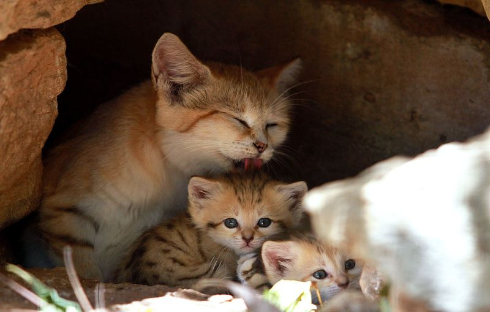
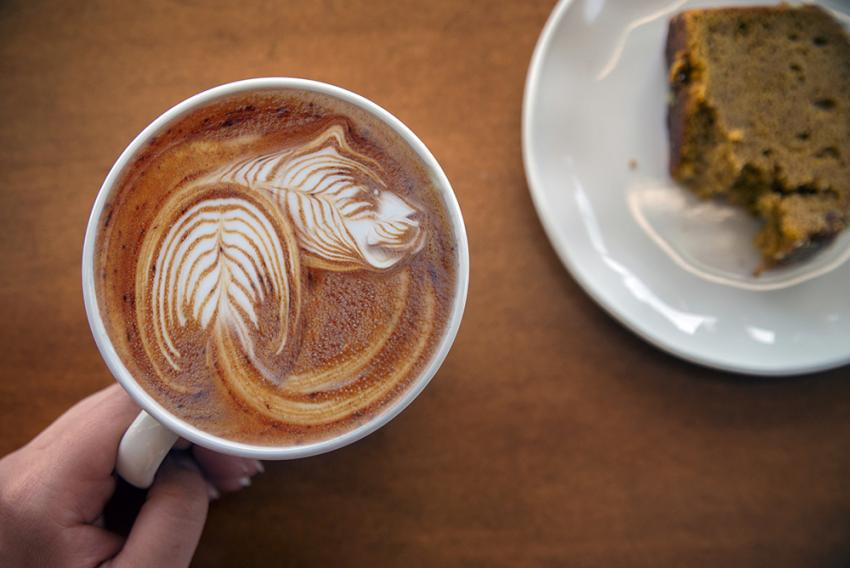
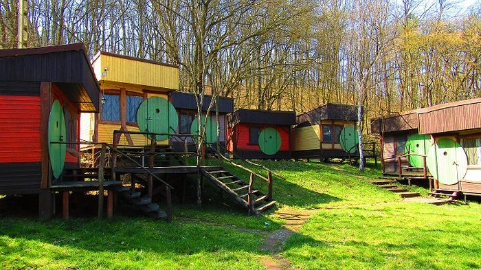

Az új kormányrendelet alapján a maszk viselése NEM kötelező, védettségi igazolvány nélkül is látogatható állatkertünk!
|
Új kiscicákat üvözölhetnek állatkertünkben

- Mocha és Felix, a két Margaritamacskánk egymásra talált, így 2022 március 09-én megérkeztett Lilly és Fondue.
A kicsiket mostantól vendégeink is megcsodálhatják.
Külön 15 perces bemutató minden nyitvatartási napon 12:00-kor: Játék a picúrokkal.
2022.03.15.
|
|
Mostantól kapható tigris kávé az Eat and Drink at the Zoo-ban

- Arra gondoltunk a Tigris éve alkalmából jövünk valami újjal, így született meg a Tigris kávé.
Baristáink ezzel várják kávézni vágyó vendégeinket. Kérd új kávénkat az állatkert Kávézó és Ételbárjábában,
az Eat and Drink at the Zoo-ban, ha valami vadra vágysz.
2022.02.08.
|
|
Júniusban jön a nyári tábor

-
Megrendezésre kerül az első nyári tábor állatkertünkben, melyre 8-12 év közötti gyerekek jelentkezését várjuk.
Tölts velünk egy felejthetetlen hetet a nyári szünetedből! Kalandpálya, állatetetések, közös nyársalás, játékok várják a lurkókat.
Április 20-ig várjuk a jelentkezéseket online formában. A tábor 7 napos, ennek költsége: 20000 Ft.
Az ételről, italról is gondoskodunk. 😸
2022.01.22.
|